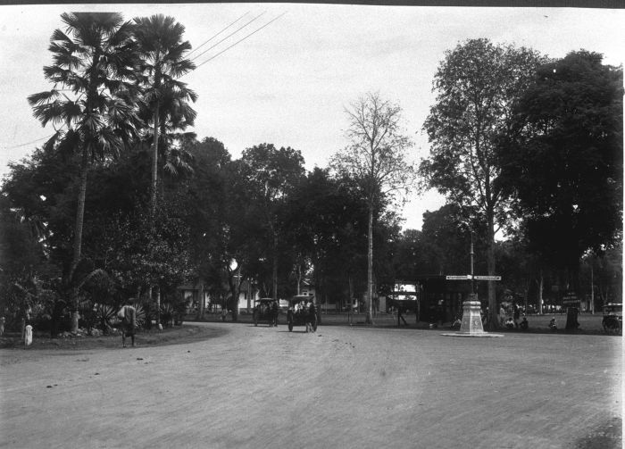
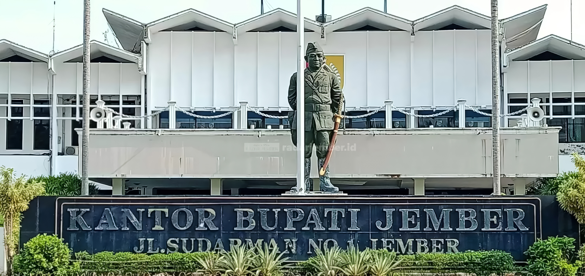
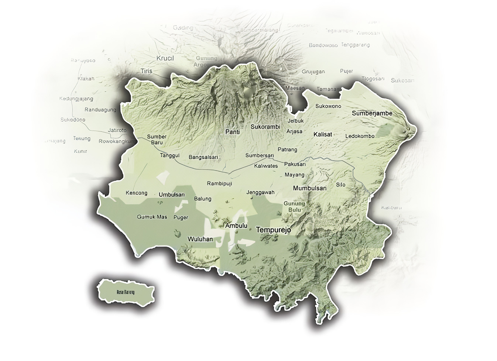
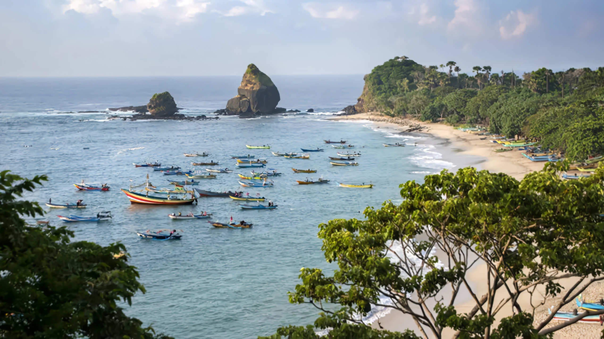
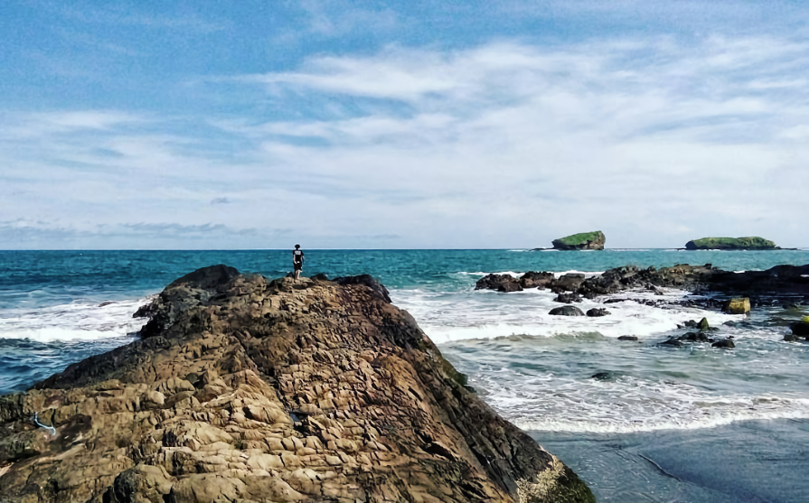

Sejarah
2 / 3

Jember tempo doloe
3 / 3

Kantor Bupati Jember
❮
❯
Jember dalam sejarah dan perjalanannya di mulai dari masa kerajaan dalam hal ini Majapahit adalah salah satu
kerajaan yang memiliki andil besar terhadap dimulainya peradaban Jember. Cerita Jember menurut buku
Nagarakretagama (1953) karangan Prof. Slamet Muljana seorang ahli Filologi dari Universitas indonesia (UI).
Menurut buku tersebut tertulis bahwa Raja Majapahit Hayam Wuruk yang bergelar "Rakryan Mantri Maka Pramuka"
mencapai
masa kejayaannya dalam memerintah Majapahit bersama Mahapati Amangkubumi Gajah Mada dan beliau bersama para
punggawa kerajaan melakukan perjalanan dari Majapahit menuju wilayah timur hingga daerah Patukangan Situbondo.
Jember adalah sebagai daerah perlintasan Raja beserta rombongan pada tahun 1359 M. Terbukti dengan bekas
peninggalannya yang masih bisa kita lihat hingga kini yaitu tersebar di daerah Jember selatan dua diantaranya
adalah Candi Deres yg terletak di Desa Purwoasri Kec. Gumukmas dan sumur kuno tembikar di Desa Muneng Kec.
Gumukmas Jember.
Pada masa Tribuwana Tungga Dewi, pusat peradaban terbesar berada di wilayah Pegunungan Sadeng tepatnya di
wilayah Kec. Puger Jember Selatan. Kerajaan Sadeng adalah kerajaan kecil di wilayah Jember selatan sebagai
salah satu pemasok lumbung pangan Majapahit dari Wilayah timur. Kerajaan ini runtuh akibat perang Sadeng
(Pasadeng) tahun 1331 M atau juga dikenal dengan pemberontakan Sadeng oleh Gajah Mada dan para prajurit
Majapahit yang penuh unsur politik terhadap kewibawaan Gajah Mada dan kepemimpinan Tribuwana Tungga Dewi.
Pada masa kolonial, kawasan ini disebut sebagai Java Oosthoek yang merupakan cikal bakal lahirnya Jawa Timur.
Penguasa Mataram Pakubuwono II yang terdesak menghadapi perlawanan pemberontak Untung Suropati dan Trunojoyo,
menggadaikan wilayah ini pada VOC. Pada masa Perang Puputan Bayu (1771-1774) daerah Puger, Kedawung dan Nusa
Barong di Jember menjadi basis pertahanan melawan VOC. Ketika di Belanda golongan liberal dengan Open Door
Policy nya berkuasa, Jember dirubah menjadi lahan perkebunan (afdeling) untuk komoditi tembakau, lalu kopi,
kakao, dan karet selama berpuluh-puluh tahun. Jejak masa perkebunan tembakau ini kental mewarnai khasanah
sejarah Jember hingga sekarang.
Geografis

Kabupaten Jember merupakan salah satu wilayah di Provinsi Jawa Timur yang terletak di bagian timur Pulau Jawa.
Secara geografis, kabupaten ini berbatasan dengan Kabupaten Bondowoso di sebelah utara, Kabupaten Banyuwangi
di sebelah timur, Samudra Hindia di sebelah selatan, dan Kabupaten Lumajang di sebelah barat. Secara
astronomis, Kabupaten Jember berada di antara 7°59' hingga 8°33' Lintang Selatan dan 113°14' hingga 113°34'
Bujur Timur.
Topografi Kabupaten Jember sangat beragam, mencakup dataran rendah, dataran tinggi, perbukitan, hingga kawasan
pegunungan. Wilayah dataran rendah umumnya berada di bagian selatan yang dekat dengan pesisir, sedangkan
dataran tinggi dan perbukitan tersebar di bagian tengah hingga utara. Pegunungan yang ada di wilayah utara
merupakan bagian dari Pegunungan Ijen, sebuah kawasan vulkanik yang penting.
Kabupaten Jember memiliki ketinggian yang bervariasi, mulai dari 0 meter di atas permukaan laut di kawasan
pesisir hingga lebih dari 1.500 meter di kawasan pegunungan. Wilayah ini juga memiliki iklim tropis dengan
pola curah hujan yang dipengaruhi oleh musim kemarau dan musim hujan. Kombinasi ini menjadikan Jember sebagai
daerah yang subur, cocok untuk pertanian dan perkebunan, yang menjadi salah satu sektor ekonomi utama di
wilayah ini.
Di bagian selatan, Kabupaten Jember memiliki pantai-pantai yang langsung menghadap Samudra Hindia.
Pantai-pantai ini tidak hanya menjadi potensi pariwisata, tetapi juga sumber mata pencaharian bagi masyarakat
pesisir melalui kegiatan perikanan. Secara umum, geografis Kabupaten Jember mencerminkan kekayaan alam dan
keanekaragaman ekosistem yang dimilikinya.
Wisata
Jember, terkenal akan keindahan alamnya yang memukau, mulai dari
pantai-pantai yang memesona hingga pegunungan yang menenangkan. Selain kekayaan alam, Jember juga menyimpan
pesona budaya dan kuliner yang khas. Dengan iklim tropis yang ramah dan masyarakat yang hangat, Jember menjadi
salah satu destinasi wisata favorit bagi pelancong yang ingin menikmati suasana tenang sekaligus berpetualang.
Berikut adalah beberapa destinasi wisata unggulan di Jember:
Pantai Tanjung Papuma

Pantai Papuma adalah salah satu destinasi wisata yang menjadi kebanggaan Jember, Jawa Timur. Terkenal
dengan pasir putihnya yang lembut dan pemandangan alam yang luar biasa, pantai ini menawarkan pengalaman
wisata yang memadukan keindahan laut, tebing-tebing megah, dan suasana tropis yang menenangkan.
Nama Papuma sendiri adalah singkatan dari "Pasir Putih Malikan," yang menggambarkan daya tarik utama pantai
ini, yaitu hamparan pasir putih yang berpadu dengan batuan malikan—batu-batu besar di sepanjang pantai yang
unik dan khas. Pemandangan di Pantai Papuma semakin memikat dengan adanya deretan perahu nelayan yang
menambah kesan tradisional dan otentik pada suasana pantai.
Pantai Papuma juga memiliki tujuh batu karang besar yang menjulang di tengah laut. Salah satu yang paling
ikonik adalah Batu Narada, yang menjadi spot favorit wisatawan untuk berfoto. Saat air laut surut,
pengunjung bisa berjalan mendekati batuan tersebut dan menjelajahi keindahan biota laut di sekitar karang.
Selain keindahan alamnya, Pantai Papuma juga menawarkan suasana tenang dan asri, menjadikannya tempat yang
ideal untuk bersantai atau menikmati matahari terbenam yang spektakuler. Bagi para pecinta fotografi,
pemandangan di Pantai Papuma merupakan objek yang tak pernah mengecewakan.
Pantai ini juga dikenal sebagai lokasi dengan cerita-cerita mitos yang menambah daya tariknya. Salah satu
legenda yang populer adalah keberadaan Gua Lawa, sebuah gua kecil yang diyakini sebagai tempat meditasi dan
memiliki nilai mistis bagi masyarakat setempat.
Dengan keindahan alamnya yang menawan dan daya tarik budayanya, Pantai Papuma menjadi destinasi yang
sempurna untuk menikmati keajaiban alam Jember sambil merasakan kehangatan budaya lokal.
Pantai Watu Ulo

Pantai Watu Ulo adalah salah satu destinasi wisata alam yang populer di Jember, Jawa Timur. Pantai ini
terkenal dengan keindahan alamnya yang memukau serta cerita legenda yang menyelimuti namanya. Terletak di
pesisir selatan Jember, pantai ini menawarkan perpaduan antara pemandangan laut yang luas, deburan ombak
yang khas, dan formasi batuan unik yang menjadi daya tarik utamanya.
Nama "Watu Ulo" yang berarti "batu ular" dalam bahasa Jawa berasal dari deretan batu memanjang yang
menyerupai tubuh ular raksasa di sepanjang pantai. Legenda lokal mengisahkan bahwa batu ini adalah bagian
dari tubuh seekor ular besar yang pernah hidup di kawasan tersebut, menambah aura mistis yang menarik
perhatian wisatawan.
Selain pemandangan uniknya, Pantai Watu Ulo juga dikelilingi oleh bukit hijau yang memberikan latar belakang
alami yang indah. Ombaknya yang cukup besar menjadikan pantai ini tempat yang menarik bagi para peselancar,
meskipun tetap memerlukan kehati-hatian karena arus laut yang kuat.
Di sekitar pantai, pengunjung dapat menemukan kios-kios yang menjual berbagai hasil laut segar, kerajinan
tangan, serta makanan khas Jember. Hal ini membuat Pantai Watu Ulo tidak hanya menjadi tempat untuk
menikmati keindahan alam, tetapi juga lokasi yang cocok untuk mengenal budaya dan kehidupan masyarakat
pesisir.
Pantai ini juga sering digunakan sebagai lokasi acara budaya dan tradisional, seperti ritual larung sesaji,
yang menambah daya tariknya sebagai destinasi wisata yang kaya akan nilai sejarah dan budaya. Dengan
keindahan alamnya yang eksotis serta legenda yang memikat, Pantai Watu Ulo menjadi salah satu tujuan yang
wajib dikunjungi bagi siapa saja yang menjelajahi Jember.
Gunung Gambir

Kebun Teh Gunung Gambir adalah salah satu destinasi wisata alam yang menenangkan di Jember, Jawa Timur.
Terletak di Kecamatan Sumberbaru, kebun teh ini berada di ketinggian yang membuatnya memiliki udara sejuk
dan menyegarkan khas pegunungan. Dengan sejarah panjang sejak masa kolonial Belanda, tempat ini tidak hanya
menyuguhkan keindahan alam, tetapi juga memiliki nilai historis yang menarik.
Hamparan hijau kebun teh yang terawat rapi menciptakan pemandangan menakjubkan sejauh mata memandang.
Suasana tenang dan udara segar menjadi daya tarik utama bagi pengunjung yang ingin melepas penat dan mencari
ketenangan. Lanskapnya yang fotogenik menjadikan kebun teh ini surga bagi para pecinta fotografi, terutama
saat pagi hari ketika kabut tipis masih menyelimuti area perkebunan.
Selain menikmati keindahan alam, pengunjung juga dapat belajar tentang proses pengolahan teh, mulai dari
pemetikan daun hingga menjadi produk siap konsumsi. Bangunan-bangunan tua bergaya kolonial di sekitar kebun
menambah daya tarik tempat ini, memberikan sentuhan historis yang memperkaya pengalaman berkunjung.
Akses ke Kebun Teh Gunung Gambir menawarkan perjalanan yang menyenangkan dengan pemandangan pegunungan yang
memukau sepanjang jalan. Suasana pegunungan yang sejuk berpadu dengan keindahan alam menjadikan kebun teh
ini destinasi ideal untuk bersantai dan meresapi keindahan Jember.
Menikmati secangkir teh hangat sambil memandangi hijauan kebun adalah pengalaman yang tak terlupakan. Bagi
siapa saja yang mendambakan kedamaian, Kebun Teh Gunung Gambir adalah pilihan yang tepat untuk melarikan
diri dari kesibukan sehari-hari.